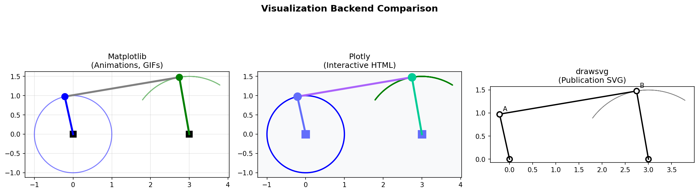
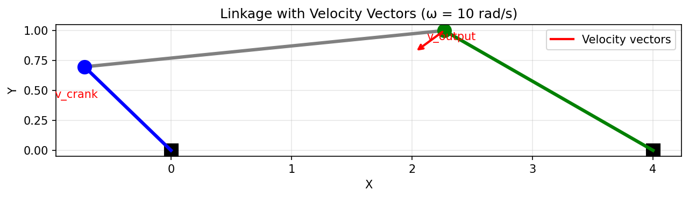

Visualization Backends
Pylinkage provides three visualization backends for different use cases:
Matplotlib: Animations and static plots (default)
Plotly: Interactive HTML visualizations
drawsvg: Publication-quality SVG output
This tutorial covers each backend with practical examples.
{kind=link}

Comparison of the three visualization backends: Matplotlib (animations), Plotly (interactive HTML), and drawsvg (publication SVG).
Quick Reference
Backend |
Best For |
Output Formats |
|---|---|---|
Matplotlib |
Quick visualization, GIF animations |
PNG, GIF, PDF, interactive window |
Plotly |
Interactive exploration, web embedding |
HTML, PNG, PDF, SVG |
drawsvg |
Publications, precise vector graphics |
SVG, PNG, PDF |
Matplotlib Backend
The default backend for quick visualization and animations.
Basic Visualization
import pylinkage as pl
from pylinkage.visualizer import show_linkage
# Create a four-bar linkage
crank = pl.Crank(0, 1, joint0=(0, 0), angle=0.31, distance=1, name="Crank")
output = pl.Revolute(3, 2, joint0=crank, joint1=(3, 0),
distance0=3, distance1=1, name="Output")
linkage = pl.Linkage(joints=(crank, output), name="Four-bar")
# Quick visualization (opens matplotlib window)
show_linkage(linkage)
Static Frame Visualization
Show the linkage at a specific position:
from pylinkage.visualizer import show_linkage
import matplotlib.pyplot as plt
# Show without animation
fig, ax = show_linkage(linkage, animated=False)
# Customize the plot
ax.set_title("Four-bar Linkage - Initial Position")
ax.grid(True, alpha=0.3)
ax.set_aspect('equal')
plt.tight_layout()
plt.savefig("linkage_static.png", dpi=150)
plt.show()
Result: A static image showing the linkage in its initial configuration.
Animated GIF Output
Create animated GIFs for documentation or presentations:
from pylinkage.visualizer import show_linkage
# Create animated GIF
show_linkage(
linkage,
save_path="four_bar_animation.gif",
fps=24, # Frames per second
duration=3000, # Total duration in ms
loci=True, # Show joint paths
)
print("Animation saved to four_bar_animation.gif")
Result: An animated GIF showing the linkage cycling through its motion.
Customizing Appearance
from pylinkage.visualizer import show_linkage
import matplotlib.pyplot as plt
fig, ax = show_linkage(
linkage,
# Display options
loci=True, # Show joint trajectories
show_legend=True, # Add legend
title="Custom Four-bar",
# Style options
joint_color='#E63946', # Joint marker color
link_color='#1D3557', # Link line color
locus_color='#A8DADC', # Trajectory line color
joint_size=80, # Marker size
# Animation options (if animated=True)
animated=True,
interval=50, # ms between frames
)
plt.show()
Showing Multiple Linkages
Compare different configurations:
import pylinkage as pl
from pylinkage.visualizer import show_linkage
import matplotlib.pyplot as plt
# Create two different four-bars
def make_fourbar(d0, d1, name):
crank = pl.Crank(0, 1, joint0=(0, 0), angle=0.31, distance=1)
output = pl.Revolute(3, 2, joint0=crank, joint1=(3, 0),
distance0=d0, distance1=d1)
return pl.Linkage(joints=(crank, output), name=name)
linkage1 = make_fourbar(3, 1, "Short rocker")
linkage2 = make_fourbar(3, 2, "Long rocker")
# Plot side by side
fig, (ax1, ax2) = plt.subplots(1, 2, figsize=(12, 5))
show_linkage(linkage1, ax=ax1, animated=False, loci=True)
ax1.set_title(linkage1.name)
show_linkage(linkage2, ax=ax2, animated=False, loci=True)
ax2.set_title(linkage2.name)
plt.tight_layout()
plt.savefig("comparison.png", dpi=150)
plt.show()
Plotly Backend
Interactive HTML visualizations ideal for web embedding and exploration.
Basic Interactive Plot
import pylinkage as pl
from pylinkage.visualizer import plot_linkage_plotly
# Create linkage
crank = pl.Crank(0, 1, joint0=(0, 0), angle=0.31, distance=1, name="Crank")
output = pl.Revolute(3, 2, joint0=crank, joint1=(3, 0),
distance0=3, distance1=1, name="Output")
linkage = pl.Linkage(joints=(crank, output), name="Four-bar")
# Create interactive plot
fig = plot_linkage_plotly(linkage)
# Display in notebook or browser
fig.show()
# Save to HTML
fig.write_html("interactive_linkage.html")
Result: An interactive HTML page where you can:
Zoom and pan
Hover over joints for coordinates
Toggle visibility of elements
Rotate through animation frames
Animation with Slider
from pylinkage.visualizer import plot_linkage_plotly
fig = plot_linkage_plotly(
linkage,
show_loci=True, # Show joint trajectories
show_slider=True, # Add frame slider
frame_count=50, # Number of animation frames
title="Interactive Four-bar",
)
fig.write_html("animated_linkage.html")
Result: HTML with a slider to scrub through the animation manually.
Customizing Plotly Appearance
from pylinkage.visualizer import plot_linkage_plotly
import plotly.graph_objects as go
fig = plot_linkage_plotly(
linkage,
# Colors
joint_color='red',
link_color='blue',
locus_color='rgba(0, 255, 0, 0.5)',
# Sizes
joint_size=15,
link_width=4,
# Layout
title="Styled Four-bar",
width=800,
height=600,
)
# Further customization using plotly API
fig.update_layout(
plot_bgcolor='white',
paper_bgcolor='white',
font=dict(family="Arial", size=14),
)
fig.update_xaxes(showgrid=True, gridwidth=1, gridcolor='lightgray')
fig.update_yaxes(showgrid=True, gridwidth=1, gridcolor='lightgray')
fig.show()
Embedding in Web Pages
from pylinkage.visualizer import plot_linkage_plotly
fig = plot_linkage_plotly(linkage, show_loci=True)
# Get HTML div for embedding
div_html = fig.to_html(include_plotlyjs='cdn', full_html=False)
# Write to file with custom wrapper
full_html = f"""
<!DOCTYPE html>
<html>
<head>
<title>My Linkage</title>
<style>
body {{ font-family: Arial; max-width: 800px; margin: auto; }}
h1 {{ text-align: center; }}
</style>
</head>
<body>
<h1>Four-bar Linkage Analysis</h1>
{div_html}
<p>Use the controls to explore the mechanism.</p>
</body>
</html>
"""
with open("embedded_linkage.html", "w") as f:
f.write(full_html)
drawsvg Backend
Publication-quality vector graphics for papers and documentation.
Basic SVG Output
import pylinkage as pl
from pylinkage.visualizer import save_linkage_svg
# Create linkage
crank = pl.Crank(0, 1, joint0=(0, 0), angle=0.31, distance=1, name="Crank")
output = pl.Revolute(3, 2, joint0=crank, joint1=(3, 0),
distance0=3, distance1=1, name="Output")
linkage = pl.Linkage(joints=(crank, output), name="Four-bar")
# Save as SVG
save_linkage_svg(linkage, "linkage.svg")
Result: A crisp SVG file that scales perfectly at any resolution.
Customizing SVG Style
from pylinkage.visualizer import save_linkage_svg
save_linkage_svg(
linkage,
"styled_linkage.svg",
# Dimensions
width=400,
height=300,
margin=20,
# Colors (CSS color strings)
joint_color='#2E86AB',
link_color='#A23B72',
ground_color='#F18F01',
locus_color='#C73E1D',
# Stroke widths
link_width=3,
locus_width=1.5,
# Joint markers
joint_radius=8,
# Show elements
show_loci=True,
show_labels=True,
show_ground=True,
)
Multi-Frame SVG
Show multiple positions in one image:
from pylinkage.visualizer import save_linkage_svg_multiframe
import pylinkage as pl
crank = pl.Crank(0, 1, joint0=(0, 0), angle=0.31, distance=1)
output = pl.Revolute(3, 2, joint0=crank, joint1=(3, 0), distance0=3, distance1=1)
linkage = pl.Linkage(joints=(crank, output))
# Show 5 evenly spaced positions
save_linkage_svg_multiframe(
linkage,
"multiframe.svg",
num_frames=5,
frame_opacity=0.3, # Transparency of intermediate frames
highlight_first=True, # Make first frame solid
highlight_last=True, # Make last frame solid
)
Result: SVG showing the linkage at multiple positions, ideal for illustrating motion.
SVG for LaTeX
Generate SVGs optimized for LaTeX documents:
from pylinkage.visualizer import save_linkage_svg
save_linkage_svg(
linkage,
"latex_figure.svg",
width=300, # Points (LaTeX-friendly)
height=200,
font_family="serif", # Match LaTeX fonts
font_size=10,
show_labels=True,
label_offset=12,
)
# Include in LaTeX:
# \begin{figure}
# \centering
# \includesvg{latex_figure}
# \caption{Four-bar linkage mechanism}
# \end{figure}
PSO Visualization
Visualize particle swarm optimization progress:
import pylinkage as pl
from pylinkage.visualizer import (
plot_pso_convergence,
plot_pso_particles,
create_pso_dashboard,
)
# Create and optimize linkage
crank = pl.Crank(0, 1, joint0=(0, 0), angle=0.31, distance=1)
output = pl.Revolute(3, 2, joint0=crank, joint1=(3, 0), distance0=3, distance1=1)
linkage = pl.Linkage(joints=(crank, output))
@pl.kinematic_minimization
def fitness(loci, **kwargs):
output_path = [step[-1] for step in loci]
bbox = pl.bounding_box(output_path)
return bbox[2] - bbox[0] # Minimize height
bounds = pl.generate_bounds(linkage.get_num_constraints())
# Run optimization with history tracking
results, history = pl.particle_swarm_optimization(
eval_func=fitness,
linkage=linkage,
bounds=bounds,
n_particles=30,
iters=50,
return_history=True,
)
# Plot convergence
fig = plot_pso_convergence(history)
fig.savefig("convergence.png")
# Plot particle distribution
fig = plot_pso_particles(history, iteration=25)
fig.savefig("particles_iter25.png")
# Create full dashboard
fig = create_pso_dashboard(linkage, history, results)
fig.savefig("pso_dashboard.png", dpi=150)
Visualization with Kinematics
Show velocity vectors alongside the linkage:
{kind=link}

Linkage with velocity vectors shown at each joint, computed from the angular velocity of the input crank.
from pylinkage.visualizer import show_kinematics, animate_kinematics
import pylinkage as pl
crank = pl.Crank(0, 1, joint0=(0, 0), angle=0.1, distance=1)
output = pl.Revolute(3, 2, joint0=crank, joint1=(3, 0), distance0=3, distance1=1)
linkage = pl.Linkage(joints=(crank, output))
# Set angular velocity
linkage.set_input_velocity(crank, omega=10.0)
# Show single frame with velocity vectors
fig = show_kinematics(
linkage,
frame_index=10,
show_velocity=True,
velocity_scale=0.05, # Scale factor for arrow length
velocity_color='red',
)
fig.savefig("velocities.png")
# Animated with velocities
animate_kinematics(
linkage,
show_velocity=True,
save_path="velocity_animation.gif",
)
Choosing the Right Backend
Use Matplotlib when:
You need quick visualization during development
You want animated GIFs for documentation
You’re working in Jupyter notebooks
You need PDF output for simple figures
Use Plotly when:
You want interactive exploration
You’re building web applications
You need to embed in HTML pages
Users need to zoom/pan/hover
Use drawsvg when:
You’re writing academic papers
You need precise vector graphics
You want to edit the output in Inkscape/Illustrator
You need consistent styling across figures
Example: Complete Visualization Workflow
import pylinkage as pl
from pylinkage.visualizer import (
show_linkage,
plot_linkage_plotly,
save_linkage_svg,
)
# Create an optimized linkage
crank = pl.Crank(0, 1, joint0=(0, 0), angle=0.31, distance=1, name="A")
output = pl.Revolute(3, 2, joint0=crank, joint1=(3, 0),
distance0=2.5, distance1=1.5, name="B")
linkage = pl.Linkage(joints=(crank, output), name="Optimized Four-bar")
# 1. Quick check with Matplotlib
show_linkage(linkage, loci=True)
# 2. Interactive exploration with Plotly
fig = plot_linkage_plotly(linkage, show_loci=True, show_slider=True)
fig.write_html("explore.html")
print("Open explore.html in browser for interactive view")
# 3. Publication figure with drawsvg
save_linkage_svg(
linkage,
"figure1.svg",
width=400,
height=300,
show_loci=True,
show_labels=True,
joint_color='black',
link_color='black',
locus_color='gray',
)
print("Publication figure saved to figure1.svg")
# 4. Animation for presentation
show_linkage(
linkage,
save_path="presentation.gif",
fps=30,
loci=True,
)
print("Animation saved to presentation.gif")
Next Steps
Getting Started - Basic linkage creation
Kinematics-Based Optimization - Velocity visualization
See
pylinkage.visualizerfor complete API reference